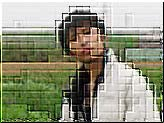
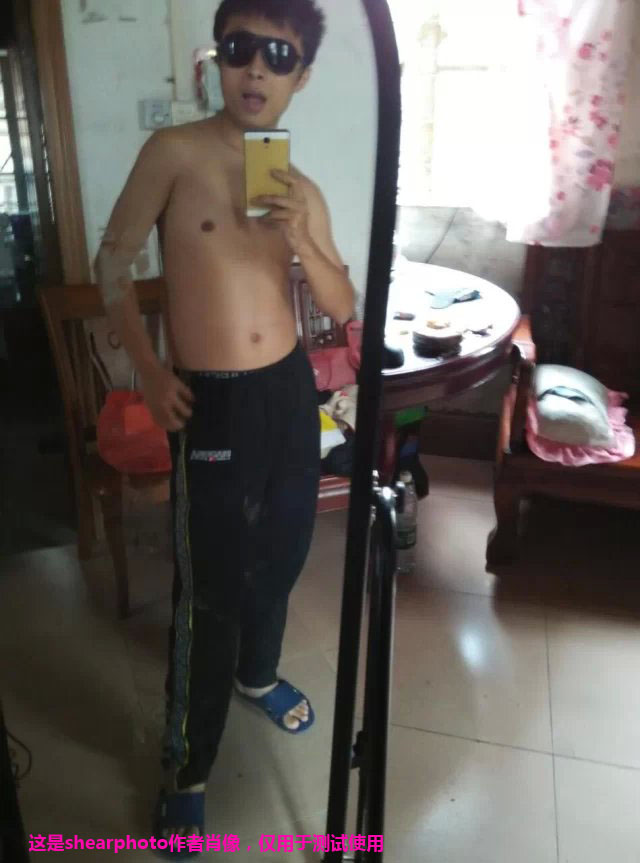
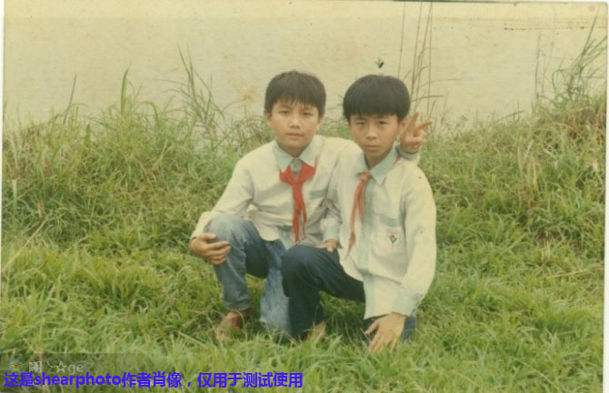
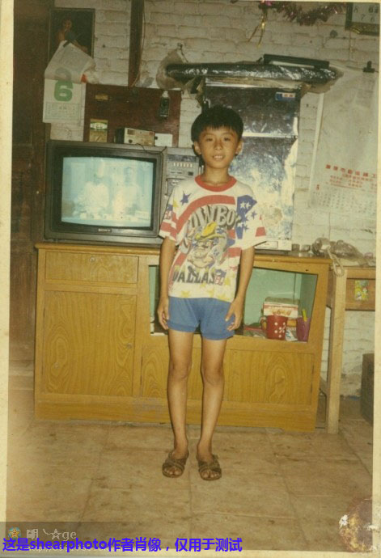

进入官方论坛
ShearPhoto 作者：明哥先生 QQ399195513-兼容所有浏览器，乞今最好的切图，HTML5截图工具！
程序加载中......
截图效果
原图
美肤效果
素描效果
自然增强
紫调效果
柔焦效果
复古效果
黑白效果
仿lomo
亮白增强
灰白效果
灰色效果
暖秋效果
木雕效果
粗糙效果
向左旋转
向右旋转
重新选择
保存截图
假如：这是一个相册--------试试点击图片



拍照
设置
关闭
ShearPhoto作者：
明哥先生 QQ399195513 | ShearPhoto兼容目前所有浏览器 | ShearPhoto官方网站：
www.shearphoto.com
| 官方QQ群：461550716
Copyright © 2015 明哥先生. All Rights Reserved